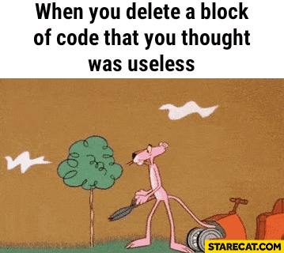
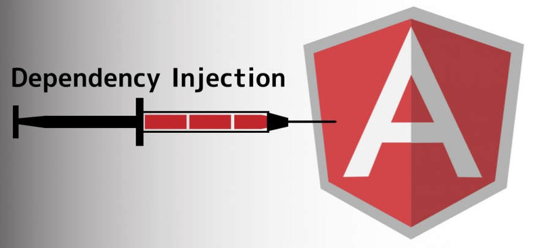
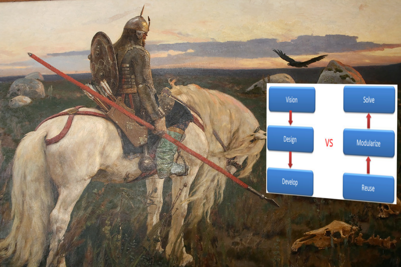
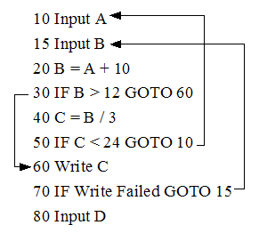
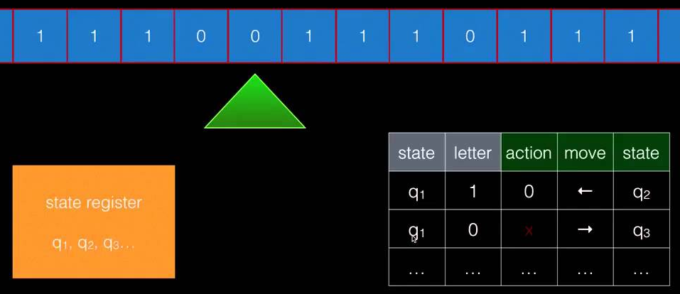

class: center, middle # From side-effects to manageable effects --- # Some frontend code ```javascript var URL = 'https://api.giphy.com/v1/gifs/random?api_key=dc6zaTOxFJmzC&tag=cats'; function app() { document.querySelector('button').addEventListener( 'click', () => fetch(URL) .then(response => response.json().data.image_url) .then(gifSrc => document.querySelector('img').setAttribute('src', gifSrc)) ); } ``` ### Effects: - DOM: `document`, `setAttribute` - HTTP: `fetch` --- # Key properties of side-effects + Not first-class citizen - Can not be passed as an argument - Can not be returned from a function - Can not be assigned to a variable + Depends on the "outside world" ## What does it mean for practice? - Difficult to analyse (for human and tools) - Difficult to refactor - Difficult to reuse - Hard testing - Unpredictability and irreproducibility - Inability to typify (Flow, TypeScript etc.) - Impossibility of an interactive development (REPL) - Difficult to provide certain properties of a program - Infects "side-effects free" code --- # Difficult to analyse .left-column-50[ ```javascript function calcAnything(value) { var a = calcA(value); var b = calcB(value); return сalcC(value, b); } ``` vs ```javascript function doSomething(value) { var a = doSomethingA(value); var b = doSomethingB(value); return doSomethingC(value, b); } ``` ] .right-column-50[  .question[ ? ] ] --- # Difficult to refactor .left-column-50[ ```javascript function calcAnything(value) { var a = calcA(value); var b = calcB(value); return сalcC(value, b); } ``` vs ```javascript function doSomething(value) { var a = doSomethingA(value); var b = doSomethingB(value); return doSomethingC(value, b); } ``` ] .right-column-50[ ```javascript function calcAnything(value) { return сalcC(value, calcB(value)); } ``` .question-with-padding[ ? ] ] --- # Is this a dead code?  --- # Difficult to reuse .left-column[ ```javascript function calcLengthAndSum() { ... } function calcLength(list) { return calcLengthAndSum(list).length; } function calcMean(list) { var res = calcLengthAndSum(list); return res.sum / res.length; } ``` vs ```javascript function sendRequestAndWriteFile() { ... } function sendRequest() { return sendRequestAndWriteFile({ onlyRequest: true }); } function sendRequestAndWriteFileOnUrl(url) { return sendRequestAndWriteFile({ url: url }) } ``` ] .right-column[  .bottom[  ] ] --- # 1000 and 1 flags ```javascript doSomething({ sendMetrics: true, urlSomeAction: '/action', logToFile: './log', progressBar: false, afterAction: () => ..., beforeAction: () => ... }) ``` --- # Hard testing ```javascript it('2 + 2 = 4', () => { var result = add(2, 2); expect(result).toBe(4); }) ``` vs ```javascript it('remoteAdd send args to endpoint', () => { var postCalls = []; var fakeRes = {}; mock(HttpClient, { post: (...args) => { postCalls.push(args); return fakeRes; }) var result = remoteAdd(2, 2); expect(postCalls.length).toBe(1); expect(postCalls[0]).toEqual({url: URL, params: {a: 2, b: 2}}); expect(result).toBe(fakeRes); }); ``` --- # Broken testing ```diff function add(a, b) { - return a + b; + return {result: a + b}; } ``` Test failed: expected `4`, received `{result: 4}` VS ```diff function remoteAdd(a, b) { + document.dispatchEvent(new LogEvent([a, b])); return HttpClient.post({url: URL, params: {a: 2, b: 2}}); } ``` Test passed --- # Some doubts  --- # Solution: explicit dependencies ```diff -function remoteAdd(a, b) { +function remoteAdd(document, HttpClient, a, b) { document.dispatchEvent(new LogEvent([a, b])); return HttpClient.post({ url: URL, params: {a: 2, b: 2} }); } ```  --- # DI is the opium of the developers ```diff function remoteAdd(HttpClient, a, b) { + HttpClient.options({url: URL, params: {a: 2, b: 2}}) return HttpClient.post({ url: URL, params: {a: 2, b: 2} }); } ``` Bad: ```javascript var result = remoteAdd(HttpClient, a, b) expect(result).toEqual(output) expect(HttpClient.post.mock.calls).toEqual(postCalls) ``` Good: ```javascript var world = new World() var result = remoteAdd(world, a, b) expect(result).toEqual(output) expect(world.changes()).toEqual(sideEffects) ``` --- # Unpredictability and irreproducibility > _Everything changes and nothing stands still_ > > -- <cite>Heraclitus</cite> ```javascript add(2, 2); ``` vs ```javascript try { remoteAdd(2, 2); } catch(e) { handleError(e); } ``` ```javascript calc(a, b) === calc(a, b) ``` vs ```javascript var res1 = fetchSomething(a); // data on server changed var res2 = fetchSomething(a); res1 !== res2 ``` --- # Inability to typify .center-text[ <img src="./img/undefined-is-not-function.jpg" width="65%" /> ] --- # Inability to typify ```javascript function parse(str: string): number | null { return isLikeNumber(str) ? parseInt(str) : null; } function add(a: number, b: number) { return a + b; } add(parse('aaa'), 3) // compile-time error ``` But typification is not useful for side-effectful code: ```javascript function patchDOM(patch: DOMPatch): void { ... } function serverProgram() { ... patchDOM(patch); // run-time error } ``` --- # Solution? [Possible solution in Flow](https://medium.com/@gcanti/the-eff-monad-implemented-in-flow-40803670c3eb) ```javascript type DB = { type: 'DB' }; type User = { username: string, uid: number }; function createUser(username: string): Eff<{ write: DB }, User> { ... } function lookupUser(username: string): Eff<{ read: DB }, ?User> { ... } ``` --- # Impossibility of an interactive development Tools: - REPL (terminal, editor plugin, console) - Mancy - Light Table  Articles: - http://tonsky.me/blog/interactive-development/ --- # Problems ```javascript > deleteUser(12) {result: "OK"} > deleteUser(12) {error: "User not found"} > addUser(12, data) > deleteUser(12) {result: "OK"} ``` Possible solutions: - jest-repl - mocha debug repl --- # Difficult to provide certain properties of a program Side-effects free functions have properties (like math functions) ```javascript var sortIdempotent = jsc.forall("string -> nat", "array string", function (f, arr) { return _.isEqual(_.sortBy(_.sortBy(arr, f), f), _.sortBy(arr, f)); }); jsc.assert(sortIdempotent); ``` Tools: - testcheck - js-verify --- # Two kinds of programming  --- # Top-Down 1) Vision and design ```typescript printSum(list: Array): PrintedSumToScreenEffect ``` 2) Development ```typescript sum(list: Array): number printToScreen(value: number): PrintedSumToScreenEffect ``` Tools: - tests — provable, but not common - diargams (UML etc.) — common, but not provable - static types — common and provable > Люди рисуют UML-диаграммы, чтобы понять общую схему программы. Именно этим занимаются программисты на функциональных языках и на Haskell, когда придумывают сигнатуры типов для модулей и функций в этих модулях. > > -- <cite>[Саймон Пейтон Джонс](http://fprog.ru/2010/issue6/interview-simon-peyton-jones/)</cite> --- # Bottom-Up 1) Reuse and modularize ```javascript sum(1, 2, 3, 4) // -> 10 print('Hello', screen) // -> prints 'Hello' to screen ``` 2) Solution ```javascript function printSum(list) print(sum(...list), screen) } ``` Tools: - tests — fragile and slow (not interactive) - REPL — fast and agile --- # Two ways... .left-column-50[ ###Top-Down  - Define top level API (without the implementation) - Define underlying API More consistent and correct, but slower and less agile Main tool: strong static types ] .right-column-50[ ###Bottom-Up  - Implement low level API calls as isolated components - Combine them into a higher-level API More agile, fast, but less consistent Main tool: REPL ] --- # Or no way? --- # Infects side-effects free code .left-column[ ```javascript function calcForItem(...) { ... var cachedResult = localStorage .getItem(argsHash); if (cachedResult) { return cachedResult; } else { ... localStorage.setItem(argsHash, res) return res; } } ``` ] .right-column[  ] --- # Ice-nine for source code .center-text[ ] > \- Ты читал «Колыбель для кошки»? > > \- Нет > > \- Итак, в этом романе мир погибает потому, что во льду обнаружена молекула, которая при соприкосновении с водой превращает её в лёд. А поскольку все воды мира связаны — пруд с ручьем, ручей с рекой, река с озером, озеро с океаном — таким образом весь мир замерзает и погибает. И эта молекула называется «Лёд-девять» > --- # Two type of calc .left-column-50[ Implicit execution: ```javascript > var user = requestUser(); { fio: "Ivan Ivanov", age: 19 } > var res = writeToFile(user.fio); { success: true } ``` ] .right-column-50[ Explicit execution: ```javascript > var req = requestUser(); { type: "http", url: "/user", payload: {id: 2} } > var user = runEffect(req); {fio: "Ivan Ivanov", age: 19 } > var writing = writeToFile(user.fio); { type: "file", name: "./sys.log", data: "Ivan Ivanov" } > var res = runEffect(writing) { success: true } ``` ] --- # Pure vs Effectful .left-column-50[ Pure: ```javascript var res1 = doSmth1(start); var res2 = doSmth2(res1); var res3 = doSmth3(res2); ``` ] .right-column-50[ With effects: ```javascript var eff1 = doSmth1(start); var res1 = runEffect(eff1); var eff2 = doSmth2(res1); var res2 = runEffect(eff2); var eff3 = doSmth3(res2); var res3 = runEffect(eff3); ``` ] --- # Sync vs Async .left-column-50[ Sync: ```javascript var res1 = doSmth1(start); var res2 = doSmth2(res1); var res3 = doSmth3(res2); ``` ] .right-column-50[ Async: ```javascript doSmth1(res1 => { doSmth2(res1, res2 => { doSmth3(res2); }); }); ``` ] --- # Safe vs Error handling .left-column-50[ Without error: ```javascript var res1 = doSmth1(start); var res2 = doSmth2(res1); var res3 = doSmth3(res2); ``` ] .right-column-50[ With error handling: ```javascript var res1 = doSmth1(start); if (isError(res1)) { var res2 = doSmth2(res1); if (isError(res2)) { var res3 = doSmth2(res2); } else { handle(res2) } } else { handle(res3) } ``` ] --- # Not nullable vs nullable .left-column-50[ Not nullable: ```javascript var res1 = doSmth1(start); var res2 = doSmth2(res1); var res3 = doSmth3(res2); ``` ] .right-column-50[ With null-check: ```javascript var res1 = doSmth1(start); if (!isNull(res1)) { var res2 = doSmth2(res1); if (!isNull(res2)) { var res3 = doSmth2(res2); } } ``` ] --- # Control-flow > In computer science, control flow (or flow of control) is the order in which individual statements, instructions or function calls of an imperative program are executed or evaluated. > > -- <cite>Wiki</cite> Example control-flow primitive: - `if` - `switch ... case` - `while`, `for` - `{ some code }` - `break`, `continue` - `throw new Error` - `return res`, `yield res` --- # GOTO .center-text[ <img src="./img/goto.jpg" width="65%"/>  ] --- # Example: error handling .left-column-50[ Today: ```javascript var res1 = doSmth1(start); if (isError(res1)) { var res2 = doSmth2(res1); if (isError(res2)) { var res3 = doSmth2(res2); } else { handle(res2) } } else { handle(res3) } ``` ] .right-column-50[ With GOTO: ```javascript error: handle(errorMsg) global errorMsg; function exitIfErr(res) { if (isError(res) { errorMsg = res; goto error; } else { return res; } } // calculation var res1 = exitIfErr(doSmth1(start)); var res2 = exitIfErr(doSmth2(res1)); var res3 = exitIfErr(doSmth3(res1)); ``` ] --- # Don't forget where you came from Mother of all statements: .center-text[ `if value then goto label` ] .left-column-50[ ```c i = 1; while(i < 4) { print(i); i = i + 1; } ``` ] .right-column-50[ ```c i = 1 START: if i = 4 then goto END print(i) i = i + 1 goto START ``` ] .center-text[  ] --- # All you need is... .left-column-50[ Calculation: `c = add(inc(a), dec(b))` Order execution: 1) `inc(a)`, `dec(b)` 2) `add(inc(a), dec(b))` ] .right-column-50[ Conditional jump: `if add(a, b) then goto LABEL` Order execution: 1) `add(a, b)` 2) `if (add(a, b))` 3) `goto label` ] --- # New World Order Imagine some calculation with reverse order calculation .center-text[ `c = add(inc(a), dec(b))` ] 1) `add(placeholder1, placeholder2)` 2) `inc(a)` 3) `dec(b)` .center-text[ `if(a, goto label)` ] 1) `if(placeholder1, placeholder2)` 2) `a` 3) maybe `goto label` --- # In your code .left-column-50[ ```javascript var x = {} x && x.obj && x.obj.prop ``` ] .right-column-50[ ```javascript var x = {} and(and(x, x.obj), x.obj.prop) ``` ] --- # This is the norm Normal order a.k.a call-by-name (call-by-need) a.k.a lazy evaluation All our languages are not turing-complete without it Theorem: all calculations can be calculated with normal order First "programming language": - 1936 Alonzo Church - Lambda calculus - normal order - 1936 Alan Turing - Turing machine - applicative order First computer: - 1944 - Von Neumann architecture (inspired by Turing machine) .right-column-50[ With normal order: **everything is calculation** ] .left-column-50[ With applicative order: **everything is calculation+control-flow** ] --- # Control-flow as continuation Continuation-passing style: Async: ```javascript requestUser(user => { writeToFile(user.fio, res => { ... } ) }) ``` Errors: ```javascript doWithErrors(res => { doWithErrors2( res, res2 => { ... }, handleErr ) },handleErr) ``` --- # Introduce call/cc .left-column-50[ ```javascript var a = 1 + 2; var b = a + 4 // 7 ``` ```javascript var firstCalc = cont => cont(1 + 2) var b = firstCalc(a => a + 4) // 7 cont === a => a + 4 ``` ] .right-column-50[ ```javascript var r var a = callcc(cont => { r = cont; cont(1 + 2) // 7 return 1 + 2 }); var b = a + 4 // 7 r(1 + 2) // 7 ``` ] --- # Exceptions ```javascript var cont; function throw (err) { cont(err); } function try(program, handleErr) { var res = callcc(c => { cont = c; program() }) if (isError(res)) { handleErr(res) } } try( () => { var a = doWithErrors() // throw new Error() ... }, err => { ... } ) ``` [Writing exceptions by contituations](http://courses.cs.washington.edu/courses/cse341/04wi/lectures/15-scheme-continuations.html) --- # Algebraic effects ```javascript var cont, currCont function perform (effect) { return callcc(c => { var currCont = c; return cont(effect); }) } function run(program, handleEffect) { var res = callcc(c => { cont = c; program() }) if (isEffect(res)) { currCont(handleEffect(res)) } return res; } run( () => { var user = perform(requestUser()) var fio = user.fio var res = perform(writeToFile(fio)) }, eff => runEffect(eff) ) ``` [Algebraic effects: esdiscuss](https://esdiscuss.org/topic/one-shot-delimited-continuations-with-effect-handlers) --- # Continuation as precursor - exceptions - algebraic effects with handlers - generators - fibers - coroutines --- # Control-flow as High Order Calculation ```javascript writeToFile(requestUser().fio) VS pipe(() => requestUser(), x => x.fio, fio => writeToFile(fio)) ``` From execution to calculation a.k.a thunk: `requestUser() -> () => requestUser()` Thunk is lazy! --- # Fix NPE ```javascript var x = {} x && x.obj && x.obj.prop ``` .left-column-50[ ```javascript function pipe(...fns) { return value => { var res = value fns.forEach(currFn => { res = currFn(res) }) return res }; } pipe( x => x.obj, obj => obj.prop )(x) ``` ] .right-column-50[ ```javascript function pipeWithNullable(...fns) { return value => { var res = value; fns.forEach(currFn => { if (!isNil(res)) { res = currFn(res) } }) return res }; } pipeWithNullable( x => x.obj, obj => obj.prop )(x) ``` ] --- # Let's make great interface ```javascript var x = {} x && x.obj && x.obj.prop ``` .left-column-50[ ```javascript function Option(value) { this = value; } Option.prototype.then = fn => { this = isNil(this) ? this : fn(this) } ``` ] .right-column-50[ ```javascript var x = {}; var val = new Option(x) .then(val => val.obj) .then(obj => val.obj.prop) ``` ] --- # Main battle! .left-column-50[ ```javascript function IO(fn) { this = { calc: fn, args: [] }; } IO.prototype.then = fn => { this = { calc: fn, args: [ this ] } } ``` ] .right-column-50[ ```javascript var ioAction = new IO(requestUser) .then(x => x.fio) .then(fio => new IO(() => writeToFile(fio)) ) run(ioAction) ``` ```javascript ioAction = { calc: new IO(() => writeToFile(fio)), args: [ { calc: x => x.fio, args: { calc: new IO(requestUser) } } ] } ``` ] --- # Representing monads - `of`, `pure`, `unit` - constructor. *How wrap value to monad?* - `flatMap`, `bind`, `return` - applyer. *How unwrap value from monad?* Monad laws: - Left identity: `flatMap(f, of(x)) === f(x)` - Right identity: `flatMap(of, x)` - Associativity: `flatMap(g, flatMap(f, x)) === flatMap(x => g(f(x)), x)` [Don't break the laws!](https://www.sitepoint.com/how-optional-breaks-the-monad-laws-and-why-it-matters/) **Beware of Haskell Police!** --- # Monads are everywhere! - `Promise` a.k.a `Task` a.k.a `Future` - `Optional` a.k.a `Option` a.k.a `Maybe` - `List` - `Either` a.k.a `Try` a.k.a `Error` - `Observable` --- # Two ways? Monads and Continuations are isomorphic and have equal power [Representing Monads](http://citeseerx.ist.psu.edu/viewdoc/download?doi=10.1.1.43.8213&rep=rep1&type=pdf) This is just representations of **control-flow** Control-flow is generated by the incompleteness of the strict (applicative) evaluation [Lazy Evaluation and Delimited Control](http://www.osl.iu.edu/publications/prints/2009/garcia09popl-lazy.pdf) --- # A journey of a thousand miles begins with a single step  --- # Plato's cave --- # Third way??? Message passing as foundation of OOP: - 1967 - [Simula](https://en.wikipedia.org/wiki/Simula) - 1970 - [Smalltalk](https://en.wikipedia.org/wiki/Smalltalk) Message passing as foundation concurrent computation: - 1973 - [Actor model](https://en.wikipedia.org/wiki/Actor_model) - 1977 - [Communicating sequential processes](https://en.wikipedia.org/wiki/Communicating_sequential_processes) All modern frontend frameworks based on message-passing primitive: - `store` in `flux`, `redux`, `ngrx/store` - `computed` in `mobx`, `vue`, `ember` - `EventEmitter` in angular2 - `subscriptions` and `Cmd` in Elm All modern backend frameworks based on message-passing primitive: - `actor` in `Akka`, `Erlang`, `Elixir` - `channels` in Go - `ReactiveStreams` in Spring --- # Lazy effects ```javascript requestUser() {isEff: true, type: "http", url: "/user", payload: {id: 2}} writeToFile("Ivan") {isEff: true, type: "file", name: "./sys.log", data: "Ivan" } ``` .left-column-50[ ```javascript writeToFile(requestUser().fio) ``` ```javascript { calc: writeToFile, args: [ { calc: x => x.fio, args: { calc: requestUser } } ] } ``` ] .right-column-50[ ] --- .left-column-50[ ```javascript // calculation var ioAction = pipeWithEffects( () => requestUser(), x => x.fio, fio => writeToFile(fio) ) // execution run(ioAction) ``` ] .right-column-50[ ```javascript ioAction = { calc: fio => writeToFile(fio), args: [ { calc: x => x.fio, args: { calc: () => requestUser() } } ] } ``` ] --- ```javascript function app(FileClient, HttpClient, a, b) { FileClient.write('log', [a, b]) HttpClient.post(a, b); var lastLine = FileClient.readLastLine(); var resHttp = Http.get(); return resHttp + lastLine; } ``` Implement the world: ```javascript FileClient = ... // implement some fake FileSystem HttpClient = ... // implement some fake HttpServer ``` --- --- # Two-color language > _In Soviet Russia side-effects control you!_ Links: - [Bob Nystrom's article](http://journal.stuffwithstuff.com/2015/02/01/what-color-is-your-function/) - [Andrey Salomatin's talk](https://www.youtube.com/watch?v=OGSppLmGchY) ```javascript blue•function doSomethingAzure() { // This is a blue function... } red•function doSomethingCarnelian() { // This is a red function... } blue•function doSomethingAzure() { doSomethingCarnelian()•red; // Error - you cant call red inside blue } ``` Two different kinds of a program code: - execution (side-effects) — red functions - calculation (pure) — blue functions